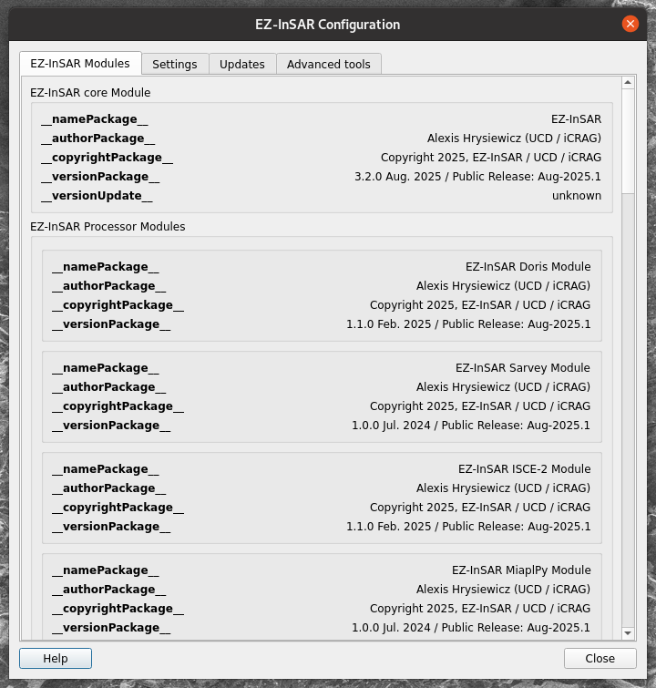
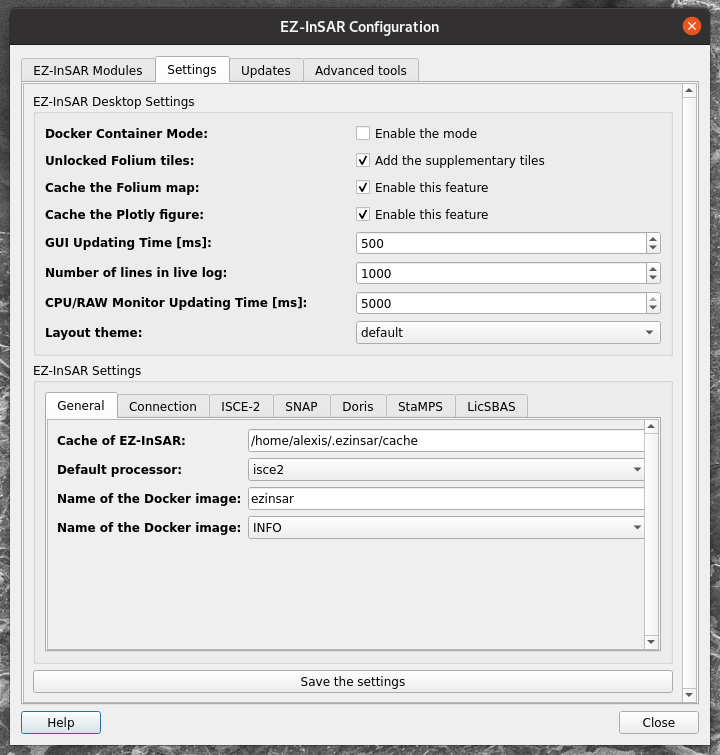
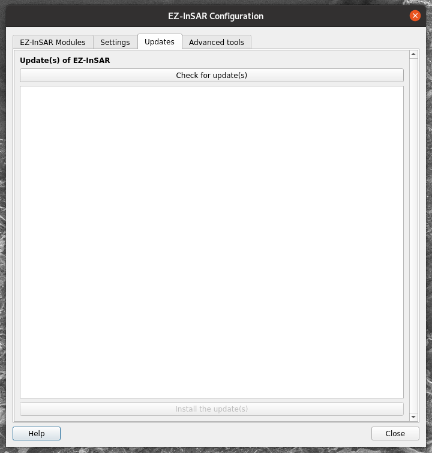
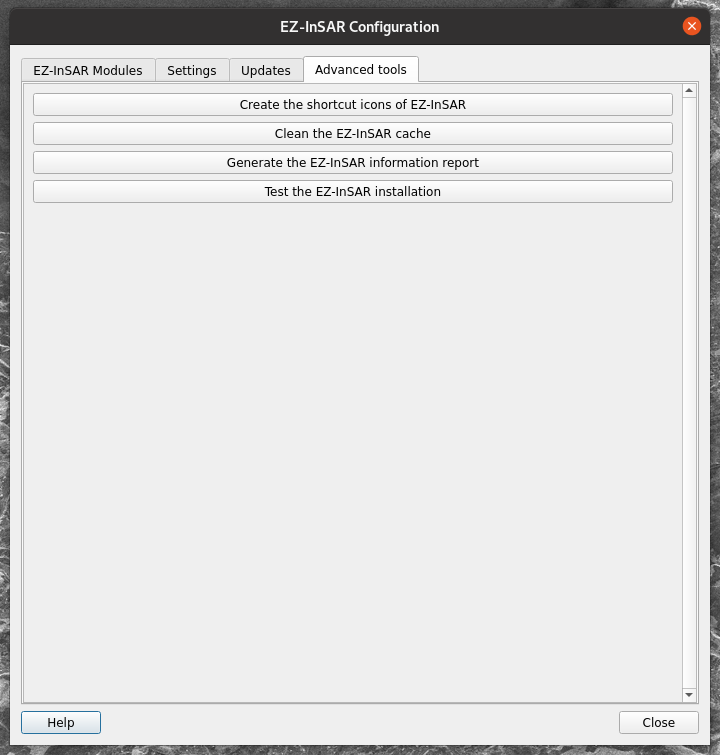

Configure EZ-InSAR Desktop Module
Note
The EZ-InSAR command to directory open the tool without the full application is:
ezinsar desktop config -f <EZ-InSAR job file> -m <processing mode>
Go to Help -> Settings (or Preferences on MacOS) in order to open the application.
The Configuration application has four tabs:
EZ-InSAR Module tab: an overview of the EZ-InSAR installation;
Settings tab: parameters of EZ-InSAR Desktop;
Updates: the updating features of EZ-InSAR;
Advanced tools: some other tools.
EZ-InSAR Module tab
This tab allows to have an overview of the EZ-InSAR installation: i.e.,:
list of installed EZ-InSAR modules;
information of the modules (version, etc.).
{kind=link}

Configuration (1/4) tool of EZ-InSAR. The layout may differ slightly depending on your version.
Settings tab
This tab can be used to modify the settings of:
EZ-InSAR Desktop Module (top part);
EZ-InSAR (buttom part); .
{kind=link}

Configuration (2/4) tool of EZ-InSAR. The layout may differ slightly depending on your version.
Settings
If a setting is modified, EZ-InSAR will be rebooted.
Updates tab
Updates
This feature will be implemented in a next version of EZ-InSAR.
{kind=link}

Configuration (3/4) tool of EZ-InSAR. The layout may differ slightly depending on your version.
Advanced tools tab
The last tab gives some tools regarding the EZ-InSAR environment.
{kind=link}

Configuration (4/4) tool of EZ-InSAR. The layout may differ slightly depending on your version.
Other tools regarding the EZ-InSAR environment
Open the license files
Go to Help -> Licenses in order to open the application regarding the license files.
Open the documentation
Note
The EZ-InSAR command to directory open the tool without the full application is:
ezinsar desktop docs [-m <ezinsar module>]
The application allows to open the documentation of EZ-InSAR. However, it is accessible from Go to Help -> Documentation.
Open the About dialog
Note
The EZ-InSAR command to directory open the tool without the full application is:
ezinsar desktop about
The application allows to open the documentation of EZ-InSAR. However, it is accessible from Go to Help -> About.